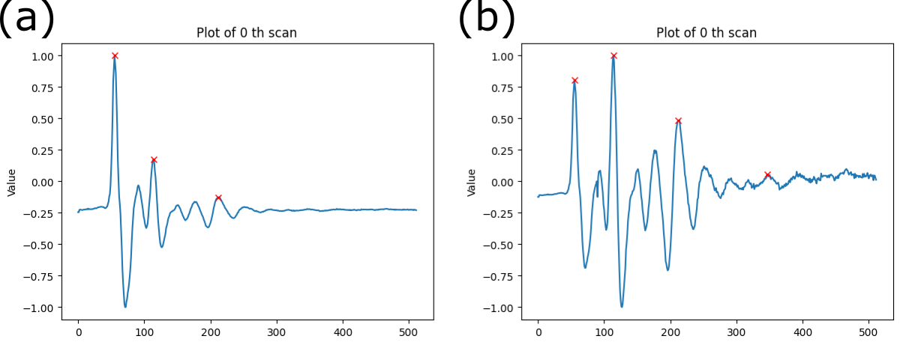

Rebar Mapping
Introduction to Reinforcement Bars
Concrete is a composite material composed of aggregates (gravel and sand), that are glued with cement and water. Due to the nature of its material structure, it is strong in compression but relatively weak in tension. (ASTM International, 1999, 2001) To address the inherent weakness of concrete in tension, reinforcement bars (rebars), typically made of steel, are added to provide tensile strength to the structure. By incorporating rebars into the concrete, the structure becomes capable of withstanding both compressive and tensile forces more effectively.
Hence, concrete with rebars is a widely used material in bridge construction. However, over time, these bridges are subject to some of environmental factors and loading conditions. These include temperature fluctuations, chemical exposure, vehicular traffic, and seismic activity, all of which can contribute to deterioration and structural changes. Among the critical challenges faced by reinforced concrete bridges are issues related to the rebars themselves. Corrosion, concrete cracking, and rebar deformation are factors that can compromise the structural integrity of the bridge.
Therefore, monitoring the location and condition of rebars is essential for assessing the structural health of concrete bridges. By continuously monitoring rebar positions, bridge owners and managers can effectively manage the long-term performance and safety of their infrastructure assets. This approach not only helps prevent costly repairs or structural failures but also ensures the continued safety and functionality of concrete bridges throughout their service life.
The prevailing technique for monitoring rebar locations in concrete bridges is employing Ground Penetrating Radar (GPR), a non-destructive evaluation technique to investigate objects or structures buried underground. The basics of GPR is organized in the Physical Principle section.
Objectives of the Case Study
This case study aims to provide a Python-based solution to processing GPR data for rebar identification in concrete bridge decks. It will give a high-level summarized report, followed by a detailed explanation about how we processed the data. Initially, the study will first demonstrate the use of CHARISMA with GPR data collected in the FHWA NDE Laboratory. Subsequently, the study will extend the use of CHARISMA to process GPR data collected in the field, a bridge located in Mississippi.
Prerequisites
Readers are redirected to the USING CHARISMA section to install the CHARISMA environment. For the transparency, we convert the data format from DZT to CSV. This part is explained in the Open Data section.
GPR Data from FHWA NDE Lab Specimen
In this section, we focus on processing GPR data obtained from our laboratory specimen (Lin et al. 2018). From the GPR data format conversion, we will elucidate how the GPR scan data looks like.
In CHARISMA, we begin the code with reading the two CSV files. One is actual GPR data (512 Rows × 332 Cols). The 512 rows are the “time” within the investigated underground subsurface, and 332 columns are the number of scans, corresponding to a distinct scan instance where a radar wavelet is emitted and recorded by the antenna while the GPR machine traverses along the survey line. The other is the GPR configuration settings (24 Rows × 2 Cols). The detailed explanation is stated in the Code explanation section.
Lab Specimen Results
We processed the GPR data with time-zero correction, migration, and rebar mapping. Here we are comparing two different time-zero methods: scan-by-scan time-zero and mean time-zero.
{kind=link}
Figure 1. Processing GPR data for a Lab specimen using CHARISMA. The raw data has been processed with two different methods: the left part is scan-by-scan, and the right part is the mean time-zero correction.
{kind=link}
Figure 2. Rebar location difference between scan-by-scan and mean time zero correction.
We compare the rebar mapping results between the two time-zero correction methods. Figure 2 shows the differences in these two cases, with the root mean squared error (RMSE) value of 0.101 inches. We confirmed that the scan-by-scan method is more accurate than the mean time-zero correction for our rebar locating algorithm since the latter method slightly overestimates the depth of the rebar.
Discussion
With the precise rebar configuration identified in our lab specimen through time-zero correction and migration techniques, we have established a solid foundation for our data analysis. The remarkably clean nature of the lab specimen data has allowed us to bypass the need for additional processing steps like gain or dewow adjustments.
As we move forward, a crucial step in validating the robustness of our methodology is to apply it to GPR data acquired from an actual bridge. Real-world scenarios often present unique challenges that may not be fully replicated in a controlled laboratory environment. To ensure the reliability and applicability of our method, the next chapter shows how we process GPR data collected from the bridge structure.
Jupyter Notebook – Lab Specimen
We provide our Jupyter notebook to show how the code is utilized to get the results. Clicking the image below will redirect you to our notebook on CHARISMA’s GitHub page.
GPR Data from FHWA InfoBridge™

FHWA InfoBridge™ provides field data collections using various NDE technologies. We selected a bridge from Mississippi to illustrate the use of CHARIMSA for rebar identification (Structure number: 11000100240460B). The bridge name is I-10 over CEDAR LAKE ROAD, built-in 1970. The bridge type is a Prestressed Concrete Girder/Beam. The length of the bridge is 242.50 and the width is 59.40 ft, respectively.

Figure 3. Screenshot of obtaining GPR data from FHWA InfoBridge™. Follow the URL, select the bridge, and scroll down to click LTBP. Then you can select the Download files to download the NDE data.
{kind=link}
Figure 4. Bridge location map of I-10 over CEDAR LAKE ROAD in Mississippi.
Mississippi Bridge Results
We noticed some outlier values in the GPR data, which we addressed using the interquartile range (IQR) method. Additionally, we observed that the GPR signal was not clear due to the dominance of the first peak amplitude over other signals. This imbalance may stem from the GPR settings or signal attenuation. To mitigate this issue, we applied a gain function and dewow to enhance the visibility of the reflected signal. Subsequently, similar to the laboratory specimen, we performed time-zero correction, migration, and rebar mapping.

Figure 5. Processing GPR data for a section of the Mississippi I-10 Bridge using CHARISMA. The gain, dewow, time-zero, migration, and rebar mapping algorithm has applied.
{kind=link}
Figure 6. Processing GPR data for a different section of the Mississippi I-10 Bridge using CHARISMA. The gain, dewow, time-zero, migration, and rebar mapping algorithm has applied.
Discussion
How do we use CHARISMA to solve the problem?
We successfully processed the actual concrete bridge GPR data by processing the outliers with IQR, applying gain to amplify the reflection signals, adjusting the A-scan baseline with dewow, leveraging the scan-by-scan time-zero correction, F-K migration, and K-means clustering algorithm to pinpoint the rebar locations. We organized all the data processing details in the Code Explanation section.
What limitations have been reminded of?
The limitation to our work lies in the F-K migration. It requires the dielectric to be constant for all media, which is hard to assume. Notably, the approximate dielectric value used in F-K migration is from the GPR configuration settings, which are defined by the user. This means if the actual data collector sets the value as default, the migration results can be significantly distorted or underestimated. We are currently working on how to automate to set the estimated dielectric based only on the migration results.
Jupyter Notebook – Mississippi Bridge
We provide our Jupyter notebook to show how the code is utilized to get the results. Clicking the image below will redirect you to our notebook on CHARISMA’s GitHub page.
Code Explanation
Read the saved CSV files
We read the saved CSV files to process further. Let’s use the read_csv function to define two Pandas DataFrames. After that, we set each row of configuration data df_2 as a local variable in Python, using the config_to_variable function.
Let’s investigate the lab specimen CSV data in detail. The DataFrame1 df_1 is actual GPR data (512 Rows × 332 Cols). The 512 rows are the “time” within the investigated underground subsurface, and 332 columns are the number of scans, corresponding to a distinct scan instance where a radar wavelet is emitted and recorded by the antenna while the GPR machine traverses along the survey line.
The DataFrame2 df_2 is a configuration setting of GPR machine (24 Rows × 2 Cols). Here we discuss some of the important parameters among them, but readers are redirected to the GPR manufacturer webpage for further details: GSSI SIR 3000 Manual https://www.geophysical.com/wp-content/uploads/2017/10/GSSI-SIR-3000-Manual.pdf. Here we discuss 7 important parameters in the configuration setting: rh_nsamp, rhf_sps, rhf_spm, rhf_position, rhf_range, rhf_espr, and rhf_depth.
The parameter rh_nsamp represents the number of samples in the depth dimension (equivalent to the number of rows in GPR data). Imagine a grid interface of the underground subsurface to save the wavelet data in a discrete form. The higher number of samples provide higher resolution, but larger size of the data.
The rhf_sps and rhf_spm refer to “scans-per-second” and “scans-per-meter”. Here scans mean the column dimension of the GPR data. Both of parameters indicate how many scans are obtained per unit time or distance.
The rhf_position and rhf_range are parameters for indicating the position and range of the GPR scans in nanoseconds (ns). For example, if rhf_position = 0, this means that the starting point for measuring positions in your GPR data is at the initial time when the radar pulse is sent. In other words, the measurement of positions starts from the moment the radar pulse is emitted. Similarly, if rhf_range = 8, it indicates the time it takes for the radar signals to travel to the subsurface and return takes 8 ns. The subtraction of rhf_range from rhf_position is the two-way travel time. By knowing the speed of electromagnetic waves and the average dielectric constant, this time can be converted to a depth measurement.
The rhf_espr is average dielectric constant. It accounts for the varying properties of the subsurface materials. Different materials have different dielectric constants, and accurate knowledge of this parameter is crucial for correctly interpreting the travel time of radar signals and converting it into depth. Table 1 shows the relative dielectric constant for various materials. The rhf_depth is depth in meters, indicating how deep into the subsurface the radar signals penetrate underground.
It is noteworthy that these GPR configurations are usually not calibrated or adjusted by the data collector. For instance, while the GPR scan distance can be determined by scans-per-meter, based on the number of scans in the data, this method often does not align accurately with real distances. Users may need to make adjustments to align the data with the actual distances.
Outlier control via interquartile range (IQR) method
With the same read_csv function from the previous chapter, we are making 2 Pandas DataFrames: GPR data and configuration. We noticed that there are some outlier values on the GPR data, so we removed them by the interquartile range (IQR) method. The IQR method is a statistical technique used to identify and remove outliers from a dataset. It involves calculating the range between the first quartile (Q1) and the third quartile (Q3) of the data distribution. Outliers are then identified and removed based on a specified multiplier of the IQR. This method is effective in addressing skewed or non-normally distributed data by focusing on the central portion of the dataset. A more detailed explanation is in our code docstrings.
{kind=link}
Gain
We observed that the GPR signal is not sufficiently clear for processing (see Figure 9 (a) and (c)), likely because the first peak amplitude significantly outweighs other signals. This disparity could be attributed to the GPR settings or signal attenuation. To address this issue, we employ a gain function to better highlight the reflected signal. We introduce two methods, namely power gain and exponential gain (Huber and Hans 2018), to enhance the clarity of the reflected signal. The power gain function is defined as follows,
The signal \(x(t)\) is multiplied by \(t^{\alpha}\), where \(\alpha\) is the exponent. In the default case, \(\alpha\) is set to 1. The effect of the power gain is to amplify the signal based on a power-law relationship with time \(t\).
The exponential gain function is defined as,
Here, \(\exp(\alpha \cdot t)\) represents the exponential function with \(\alpha\) as the exponent. The signal \(x(t)\) is multiplied by this exponential term. The exponential gain introduces a time-dependent exponential factor to the signal. Adjusting the \(\alpha\) parameter allows control over the rate of amplification, impacting the signal characteristics. We applied the power gain function with \(\alpha = 0.2\) only after the initial positive and negative peaks for improved visibility and processing.
{kind=link}
Figure 8. A-scan of the GPR data (a) before gain and (b) after gain. The first peak in (a) is much larger than the other signals, making the B-scan image blur. Note that the base line of the signal in (b) is going upward, due to the amplification.
{kind=link}
Figure 9. B-scan of the GPR data (a) & (c) before gain and (b) & (d) after gain.
Dewow
Dewow is used to mitigate the effects of low-frequency variations, or “wows,” in the GPR signal. The terminology is derived from the nature of the low-frequency variations or oscillations that it aims to mitigate—resembling a slow, undulating motion, akin to the exclamation “wow.” Wows can result from various factors, such as uneven ground surfaces or fluctuations in the system. Dewow processing involves filtering or removing these low-frequency components from the GPR signal to enhance the clarity and resolution of subsurface features. This technique helps improve the overall quality of GPR data by reducing unwanted variations. Here we used trinomial dewow (Nesbitt et al. 2022) to correct the baseline of each A-scan.
{kind=link}
Figure 10. A-scan of the GPR data (a) before dewow and (b) after dewow. The baseline of the A-scan is corrected.
{kind=link}
Figure 11. B-scan of the GPR data (a) & (c) before dewow and (b) & (d) after dewow.
Time-zero correction
Time-zero correction aligns multiple A-scans vertically. When the reflected signal is recorded in the receiver, several factors (thermal drift, electronic instability, cable length differences, or variations in antenna airgap) can cause inconsistent wavelet arrival time (Jol 2008). Time-zero correction provides a more accurate depth calculation because it sets the top of the scan to a close approximation of the ground surface (GSSI Inc. 2017). We assume the first positive peak of each A-scan represents the 0 m depth of the ground surface, which is called the “first positive peak” method (Cook et al. 2022)(Yelf 2004).
{kind=link}
Figure 12. Comparison of (a) before time-zero correction and (b) after scan-by-scan time-zero correction on our GPR data.
There are a couple of methods of time-zero correction, one method is calculating the mean or median value of the first peak’s arrival time for the entire A-scans and cut out the data before the mean or median time (Cook et al. 2022). However, this method is not robust since the time-zero position is not perfectly aligned with all the 1st positive peaks of the A-scans (see Figure 12). This method does not correspond with our assumption that the first positive peak of each A-scan represents the 0 m depth of the ground surface.
{kind=link}
Figure 13. Plots of multiple A-scans with mean value method. The red vertical line shows the time-zero index based on the mean value. Some of the 1st positive peaks of A-scans align with the time-zero, but some A-scans do not.
The other method is “scan-by-scan” which is more reasonable and robust than the mean or median strategy. This method detects the 1st positive peaks of A-scans and processes them individually. However, since the location of the 1st peak is different from each other, the data length is also changed. For example, one A-scan has 1st positive peak at the 127th depth index, the other has the 130th index, and if we align the data based on the time-zero index, the starting and ending points of A-scans mismatch each other (See Figure 13). Thus, we cut out the data indices that are not in the common range. For example, if one of the A-scan ranges [-125, 386] and the other ranges [-135, 376], we are taking the data only in common so that the range of data indices becomes [-125, 376]. Figure 14 shows the result of our scan-by-scan time-zero correction after the index cut out.
{kind=link}
Figure 14. Plots of multiple A-scans with scan-by-scan method. The red vertical line shows the time-zero index, and the 1st positive peak is aligned to the red line. This method results in misalignment at the starting and ending points of the A-scan profiles.
{kind=link}
Figure 15. Plots containing multiple A-scans using the scan-by-scan approach, with the exclusion of data outside the common range. The red vertical line shows the time-zero index, and the 1st positive peak is aligned to the red line. The misalignment issue at the starting and the ending points of the A-scan profiles is solved.
Migration
Migration process converts the hyperbolic signal into spatial locations of the subsurface object. The hyperbolas in the GPR B-scan data stem from the nature of its method. GPR uses electromagnetic wave pulse to detect buried objects, and the antenna is traversing over the survey line. When the antenna is directly above the object, the distance is at its minimum. As the antenna moves, the distance is getting longer. This changing distance results in a distance-time plot that resembles a hyperbola (Figure 15).
{kind=link}
Figure 16. Schematic of GPR data acquisition process and hyperbola profile formation on the distance-time plot. Note that the distance is minimal when the object and antenna are vertically aligned (Poluha et al. 2017).
The hyperbola profiles in B-scan can lead to distortions in the radar image. Migration algorithms help correct these distortions, relocating the reflected signals to their correct positions in the subsurface, resulting in a more accurate representation of the buried features. Here we specifically introduce Frequency-Wavenumber (F-K or Stolt) migration (Stolt 1978). This method has proven to work well for the constant-velocity propagation media (Xu, Miller, and Rappaport 2003)(Özdemir et al. 2014).
The F-K migration transforms the GPR B-scan into an artificially created wave map. In other words, this method specifically locates the object by reconstructing the waveforms at object locations. This is done by the Fourier Transform, converting the waves from the time-space domain to the frequency-wavenumber domain. To understand how this process works, we need the wave propagation equation in a media,
where \(\phi\) is the wave function (apparently GPR signals are electromagnetic waves), \(x\) is the axis along the GPR survey line, \(z\) is the axis along the depth, and \(t\) is the time. If you are not familiar with the wave propagation equation in a media, you are redirected to the following YouTube video, which derives the wave equation from scratch with the guitar (acoustic wave): https://www.youtube.com/watch?v=UXqUXYaRyGU&t=1684s&ab_channel=SteveBrunton
The next step is applying the inverse Fourier transform to the wave function \(\phi(x, z, t)\),
where \(E(k_x, \omega)\) is the Fourier domain for every possible combination of wave number \(k_x\) and frequency \(\omega\). The physical meaning of the equation is that the wave function can be expressed as a summation of various plane waves with different wavenumbers and frequencies. It is noteworthy that the \(E(k_x, \omega)\) is time-independent, which will be used to relocate the waveform at the specific location of the object underground (The meaning of “migration” comes from this aspect).
After the inverse Fourier transform, we correlate our actual GPR data into the equation. Note that we receive GPR signal at \(z = 0\), where the antenna locations are at the surface. Then the wave function becomes,
This equation can transform the GPR signals into the frequency-wavenumber domain. To reconstruct the wave function, we need to know the \(E(k_x, \omega)\). \(E(k_x, \omega)\) is obtained by Fourier transform and our GPR signal,
Now, the equation is formulated to construct our parameter \(E(k_x, \omega)\) based on the GPR data. We will employ the Exploding Source Modeling (ESM), which straightforwardly assumes that the reflected GPR wave originates directly from the object itself. This assumption allows us to express our reconstructed signal (the migrated image) as \(\phi(x, z, t = 0)\), where \(t = 0\) signifies the initial waveform at the object. At this point, we successfully correlated the GPR signal \(\phi(x, z = 0, t)\) with the Fourier domain \(E(k_x, \omega)\), and this \(E(k_x, \omega)\) is again correlated to the wavefunction at the object \(\phi(x, z, t = 0)\). This is the main logic of the F-K migration.
It’s crucial to emphasize that this assumption holds true only when the data is time-zeroed, as our consideration of the time frame extends from the object to the surface. As previously mentioned, the time-zero correction assumes that we interpret the first positive peak as the surface reflection, and without time-zero, the time frame extends beyond the object to the surface when setting \(t = 0\) at the object.
Another crucial aspect of ESM is the elimination of the \(-\omega t\) term in the equation. This modification enables us to employ the Fast Fourier Transform for wavefunction reconstruction. By removing the time-dependent term from the exponential part, the equation becomes more numerically manageable. Our final mathematical representation of F-K migration is as follows,
In our Python code, we discretize the wave function at the surface (GPR signal) \(\phi(x, z = 0, t)\) as a matrix, and then solve the equations above numerically (through fast Fourier transform) to reconstruct the wave function at \(t = 0\), \(\phi(x, z, t = 0)\) based on \(E(k_x, \omega)\).
Pinpoint Rebars
It is noteworthy that the size of the white points are too large compared to the actual rebar diameter, so we estimate the rebar location with the K-means clustering method. K-means clustering is a popular unsupervised machine learning algorithm used for partitioning a dataset into distinct, non-overlapping clusters. The goal is to group similar data points together and separate dissimilar ones. Interesting features in K-means clustering are that 1) we can specify the number of clusters we want to observe, and 2) we can point out the centroid of each cluster. We take advantage of these features to pinpoint the rebar location.
Our code normalizes the signal amplitude of the migrated data frame from 0 to 1, gets all the data points where the amplitudes are above a threshold value. This allows us to get all the white data points to form a cluster around the white locations. Since we know the number of white points, we apply the K-means clustering algorithm to identify the \((x, z)\) coordinates of each centroid of the cluster. Detailed information is available on the docstrings in the code.